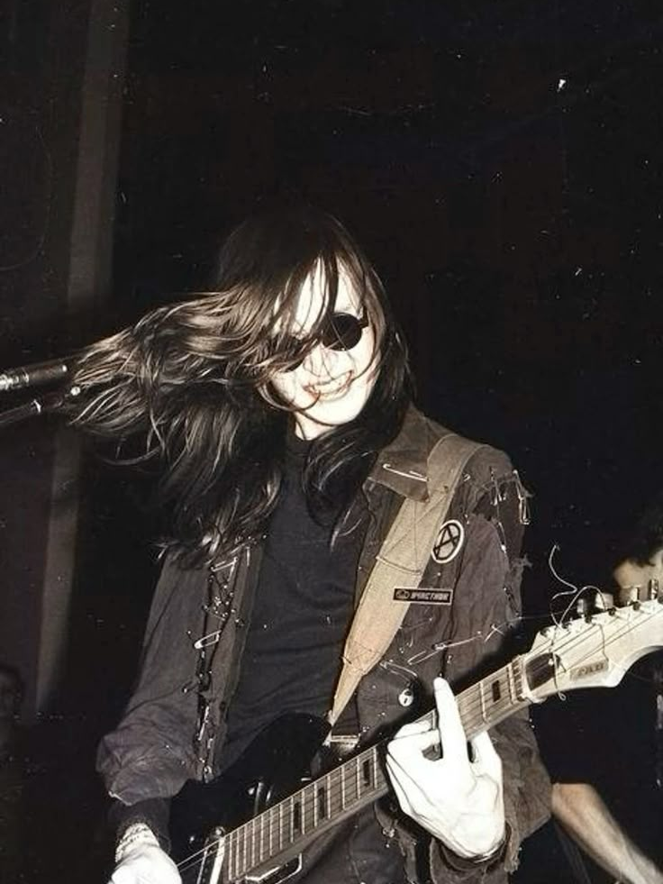
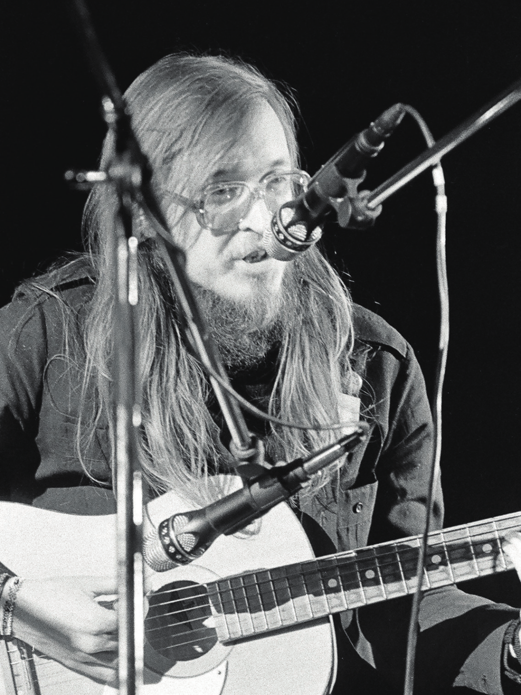
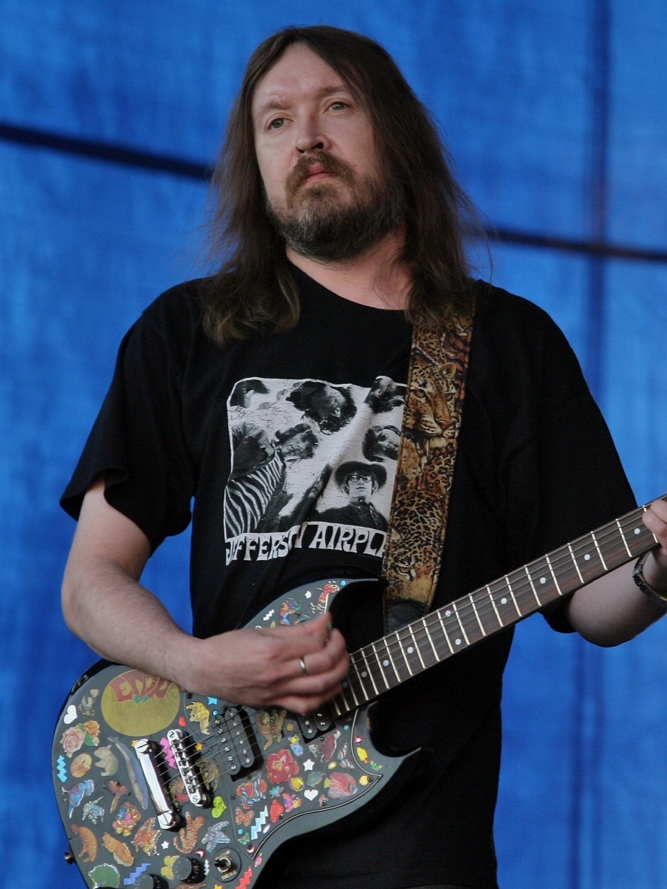

Творчество Егора Летова — это не просто рок-поэзия, а грандиозный философский проект, запечатлевший путь от экзистенциального крика к просветлённому смирению. Академическая статья из Томского госуниверситета точно определяет эту эволюцию как движение «от романтического бунта к натурфилософскому мифу». Пройдя путь от агрессивного анархо-панка до умиротворённой психоделии, Летов создал уникальную вселенную, где личное переплетается с космическим, а ярость уступает место «сиянию».

Романтический бунт: огонь ранних лет
Ранний период Летова (середина 80-х) — это эпоха «гаражного» звука и бескомпромиссного протеста. Начав с группы «Посев», а затем создав «Гражданскую оборону», Летов взял на вооружение эстетику панка, но наполнил её глубоко личным, почти религиозным смыслом. Исследователи отмечают, что для него творчество было формой «прометеевства» — «крамольным и бунтарским похищением у горнего мира небесного огня». Это был не просто протест против системы, а борьба за подлинность в мире «пластмассовой» фальши.
В песнях этого периода, таких как «Поганая молодёжь» или культовая «Всё идёт по плану», лирический герой — воин. Он противопоставляет себя «почтенным гражданам», использует ненормативную лексику как оружие, а его бунт тотален и не имеет конкретной цели, кроме самого акта противостояния. Летов формулирует это так: «При любом госстрое я партизан, при любом режиме я анархист». Этот этап, по мнению исследователей, является качественным и количественным расцветом его поэтического творчества, где формируется главный набор категорий: тоталитаризм, свобода, смерть и жизнь.
Однако уже тогда, в 1989 году, появляются песни, предвещающие перелом. В «Тошноте», отсылающей к Сартру, герой не просто борется с миром, а отказывается его воспринимать, что становится шагом к уходу вовнутрь. Сам Летов позже скажет: «Все мои песни... именно о любви, свете и радости», но это «настоящее» — «страшновато». В этой фразе — ключ к пониманию его эволюции: поиск света через преодоление тьмы.

Метафизический поворот: от войны миров к войне с собой
Кризис 90-х годов, распад идеологических структур, которые питали его протест, и, что самое главное, личные экзистенциальные переживания привели Летова к глубочайшей трансформации. Он смещает фокус с внешнего врага на внутренний космос. Как сказано в одной из рецензий, для него на первый план выходит «Летов-психонавт», а не «Летов-политик».
Этот переход наглядно демонстрирует альбом «Инструкция по выживанию» (1991), где он исполняет песни Романа Неумоева. Это был для него этап «ломки сознания» и поиска новой формы. Апофеозом метафизических исканий становится психоделическая дилогия «Долгая счастливая жизнь / Реанимация» (2004–2005).
Здесь ключевой становится песня «Долгая счастливая жизнь». Написанная после попадания в реанимацию, она посвящена ужасу от необходимости отказаться от наркотиков, которые Летов считал инструментом расширения сознания. Он описывает это состояние как «безрыбье в золотой полынье» и «непроглядную ледяную тишину», где нет праздников и вдохновения. Для Летова это была смерть творца, отказ от привычного способа существования. Однако в этом отрицании рождается новая философия: «долгая счастливая жизнь» — это не бесконечный праздник, а осознанное бытие, где «праздник для нас – не отметка в календаре, а день, который мы сами можем превратить в веселье». Это стоицизм, когда, по его словам, «все проиграно, но все равно надо продолжать сопротивляться».

«Сияние»: принятие и последний покой
Вершиной этого пути становится последний альбом группы, «Зачем снятся сны?» (2007). Критики единодушно отмечают его «умиротворяющий», «колыбельный» характер, полное отсутствие мата и былой агрессии. Альбом рассматривается как «подарок для знатоков», где Летов является «самим собой», без накладок политических ярлыков.
Центральная песня альбома, «Сияние», — это квинтэссенция поздней философии Летова. Текст до гениальности прост: «Спят леса и селения... Но сиянье обрушится вниз, станет твоей судьбой... душой... землёй... самим тобой». Летов рассказывал, что песня родилась как вспышка, и в ней всё земное, тревожное засыпает, уступая место чему-то высшему, что становится самим человеком. Здесь концепция бунта трансформируется в идею единения с бытием. «Сияние» — это не просто свет, это метафора преображения, обретения целостности, которая приходит после преодоления личного ада. Это ответ на ужас «долгой счастливой жизни» без допинга — оказывается, «сияние» может снизойти и стать твоей внутренней сутью.
Этот альбом был его творческим завещанием. Как написано в одной из рецензий: «Хорошо, что Игорь Фёдорович успел».
Заключение: праздник, который остался
Философия Егора Летова — это не статичный набор догм, а живой путь, зафиксированный в звуке. От романтического анархизма, с его агрессивным отрицанием «системы», он пришёл к анархизму экзистенциальному и даже экологическому, где главная битва разворачивается внутри человека за право быть подлинным, светлым и целостным. Сам Летов описывал свой путь так: он начинал как нападающий в футболе, а закончил как опорный полузащитник, комфортно чувствующий себя «где от меня никто не ожидал голов».
Важно помнить, что для Летова смысл всего творчества заключался не в изменении мира, а в возможности оставить след, создать «невъебенный праздник», который останется для всех, «кто еще имеет уши — слышать». В этом, возможно, и заключается главный урок его эволюции: от громогласного протеста к тихому, но вечному сиянию подлинной жизни.